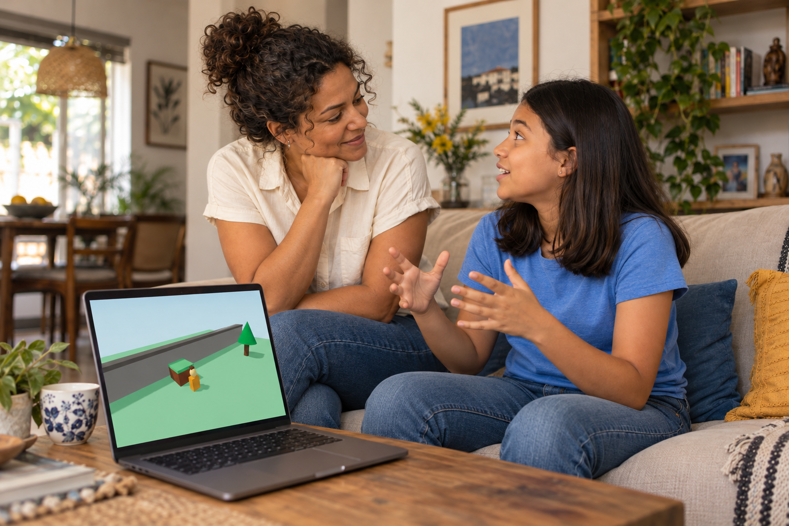
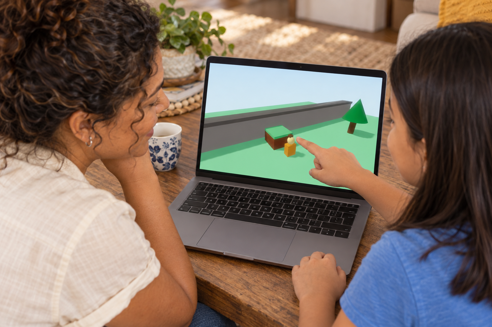
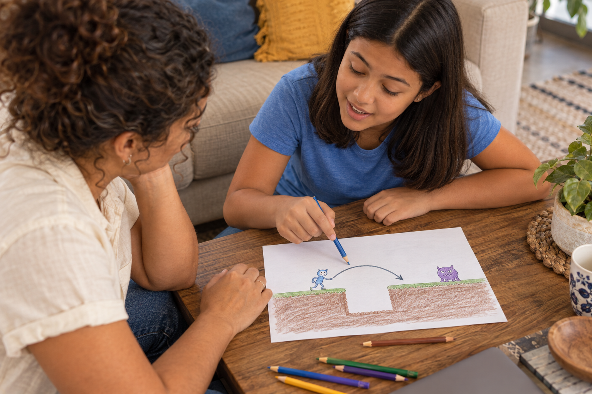
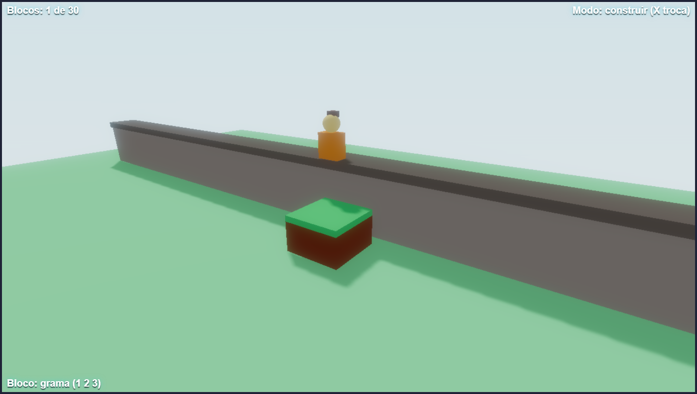
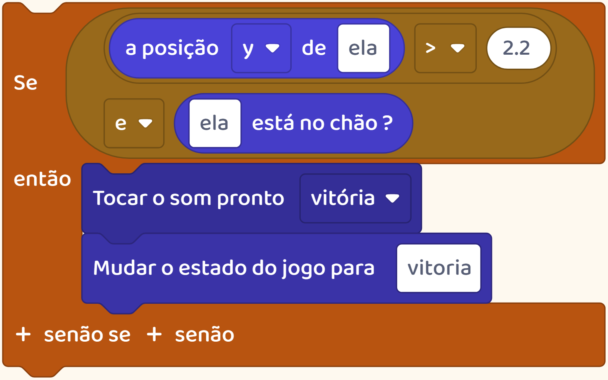
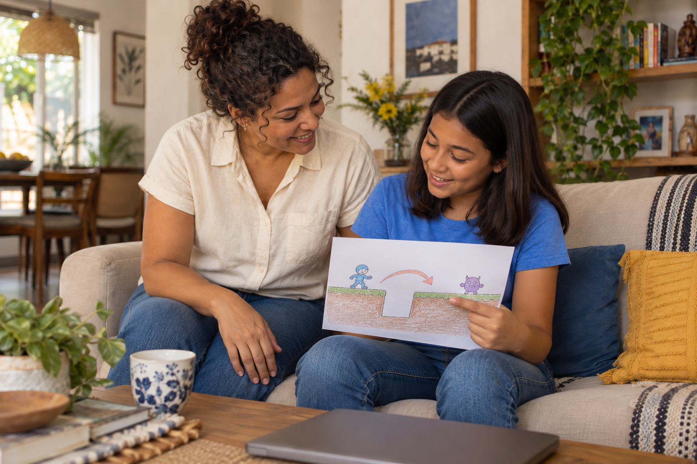

Teste em casa
A conversa sobre jogos pode ir além de “já deu a hora”.
Peça para sua filha contar como seria um jogo inventado por ela.

A conversa sobre jogos pode ir além de “já deu a hora”.
Peça para sua filha contar como seria um jogo inventado por ela.

Comece pelo que ela já gosta.

Qual é a parte preferida? O que o personagem faz? Deixe ela mostrar enquanto explica.
Depois pergunte: “Se você criasse uma fase, o que colocaria nela?”
Pode ser um caminho, um personagem ou um desafio.
Peça para ela explicar uma escolha.

Se colocou um buraco no caminho, como o personagem passaria por ele?
Ao criar um jogo, ela pode testar essas ideias.
Neste exemplo da nossa ferramenta, o jogador coloca blocos para construir um caminho.
Um bloco perto da muralha pode servir de degrau para chegar ao topo.
Quem cria o jogo decide o desafio e testa se dá para completá-lo.


Você pode acompanhar as ideias dela ouvindo, perguntando e olhando o que fez.

Siga @criecomhelenaejulio para descobrir mais conversas sobre a criação de jogos.